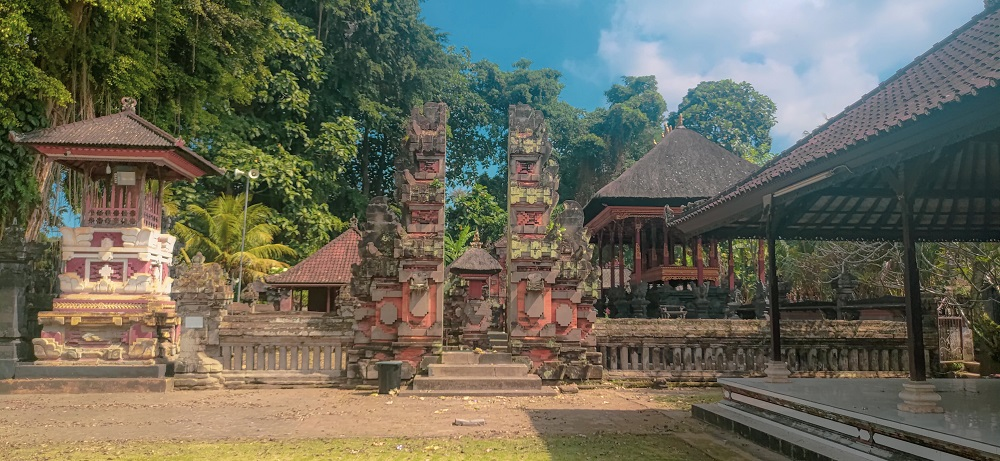

Anda bisa melakukan virtual tour untuk menelusuri seluruh wilayah
pura Dalem, Desa Adat Buwit secara virtual untuk mengetahui lebih
detail keseluruhan pura.

Pura Puseh & Desa
Anda bisa melakukan virtual tour untuk menelusuri seluruh wilayah
pura Puseh & Desa, Desa Adat Buwit secara virtual untuk mengetahui
lebih detail keseluruhan pura.